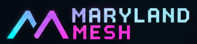

01 · CHOOSE
Pick a supported device
Meshtastic hardware comes in different styles and uses different chips. Check the supported-device list for your exact model.
See supported hardware →
Start with the right device, follow setup instructions for that model, and connect it to the Meshtastic app.
Meshtastic hardware comes in different styles and uses different chips. Check the supported-device list for your exact model.
See supported hardware →Before powering on your radio, attach its antenna. Then follow the firmware setup instructions for your device model.
Read antenna safety guide →Depending on your device, connect your phone or computer over Bluetooth, Wi‑Fi, or USB, then follow the app’s setup steps.
Connect your device →